Telnet协议是TCP/IP协议族中的一员，是Internet远程登陆服务的标准协议和主要方式。它为用户提供了在本地计算机上完成远程主机工作的能力。在终端使用者的电脑上使用telnet程序，用它连接到服务器。终端使用者可以在telnet程序中输入命令，这些命令会在服务器上运行，就像直接在服务器的控制台上输入一样。可以在本地就能控制服务器。要开始一个telnet会话，必须输入用户名和密码来登录服务器。Telnet是常用的远程控制Web服务器的方法。
准备工作
- 虚拟机Virtual Box(Telnet服务端)
安装Windows XP SP3操作系统
开启了Telnet服务
添加了一个账户用于远程登录,用户名和密码都是micooz - 宿主机Windows 8.1 Pro(Telnet客户端)
安装了分析工具Wireshark1.11.2
安装了Telnet客户端程序
PS:虚拟机网卡选用桥接模式
操作流程
- 开启虚拟机和Wireshark
- 查看XP获得的ip地址,这里是192.168.199.134;网卡MAC地址:08:00:27:a0:9f:f8
宿主机IP地址是192.168.199.154;网卡MAC地址:00:26:4d:a1:59:de - 客户端主机启动cmd键入命令
telnet 192.168.199.134 回车 - 显示是否发送密码
回车 - 显示login:
键入micooz回车 - 显示password:
键入micooz回车 - 进入telnet客户端主界面命令行
- 键入net user回车
- 显示结果
- 关闭cmd
- 结束
开始分析
①建立连接(TCP三次握手)
步骤3执行后,telnet客户端开始工作,首先是与虚拟机中的服务端程序建立TCP连接,从抓取的数据包来看,首先关于本次分析的数据包是典型的TCP三次握手,如图所示:
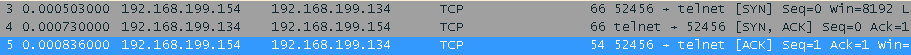
由于是我第一次搞网络协议分析,就TCP的三次握手过程也做一个分析吧.
主机(192.168.199.154)发送一个连接请求到虚拟机(192.168.199.134),第一个TCP包的格式如图所示:
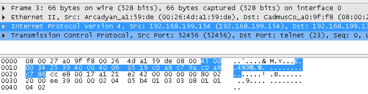
|以太网v2头|ipv4报文|TCP报文|
其中以太网v2头是由数据链路层加上去的:
1-6bytes是目的地址,也即虚拟机的网卡MAC,
7-12bytes是源地址,也即宿主机MAC.
13-14(0x0800)是上层协议,这里是IP
第二段是ipv4的报文,网际协议IP是工作在网络层,也就是数据链路层的上层,上图数据区选中部分就是ipv4数据,其格式为:
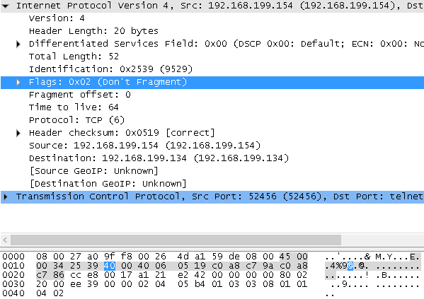
可以非常清楚的看到那些教科书上讲到的IPv4报文格式在实际中式如何表现出来的.
值得注意的是,IPv4报文中的源地址和目的地址是ip地址,版本号TCP是6,标志字段是010就是禁止下层分段,且是完整的报文
第三段是TCP报文,从上面两个可以知道,这个TCP包被层层包装,经过下面一层就相应的包装一层,第三段是经过传输层的数
据,TCP报文的格式为:
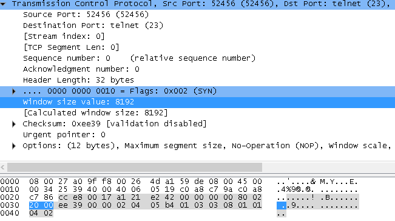
和书本上讲的格式基本一致,这里说明了TCP的源端口52456也就是宿主机建立连接开出来的端口,目的端口23显然是
telnet服务默认端口.
Sequence number同步序号4bytes,这里是0xa1 21 e2 42,但这里显示的是相对值0.
Acknowledgment number确认序号4bytes,为0,因为还是第一个握手包.
Header Length头长度32字节,滑动窗口大小8192字节(8MB),校验和,紧急指针为0.
Options选项12字节,其中包含最大传输单元MTU默认是1460bytes.
再来看看第二个TCP数据包,它是一个来自虚拟机的应答,按照三次握手的原则,这个数据包中TCP报文确认序号应该等于上
一个请求包中的同步序号+1,我们来看一下是不是:
Pack1. Seq = 0xa1 21 e2 42 Ack = 0x00 00 00 00
Pack2. Seq = 0x97 0f 37 11 Ack = 0xa1 21 e2 43
看下图更清楚:
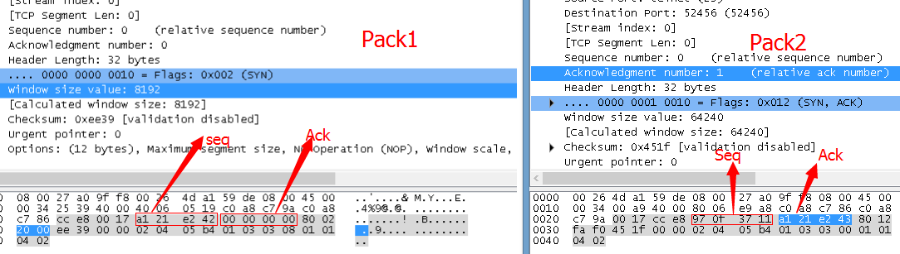
显然如TCP规定的那样工作. Flags字段中也显示出两个包的标志位.第一个是SYN,第二个是SYN,ACK.
那么显然第三个包应该这样工作:
Pack1. Seq = 0xa1 21 e2 42 [Ack = 0x00 00 00 00]
Pack2. Seq = 0x97 0f 37 11 Ack = 0xa1 21 e2 43
Pack3. [Seq = 0xa1 21 e2 43] Ack = 0x97 0f 37 12
主机收到Pack2,取出其中Seq+1赋给Ack,然后给虚拟机做出应答. Pack1中的Ack和Pack3中的Seq在一次完整的三次
握手中似乎没起到什么作用,如果发生丢失可能会起作用吧,这里没条件去测试.
那么,虽然还没正式进入Telnet的核心,但是TCP三次握手的流程基本清晰了.下面小结一下:
1.TCP连接的建立通过三次握手完成.
2.TCP连接建立从传输层出发,TCP报文包装一个IP报头后形成一个IPv4报文经过网络层,然后再包装一个以太网帧头形成一个Ethernet帧通过数据链路层.
3.传输层的TCP报文含有Port端口地址; 网络层的IP报文中含有IP地址; 数据链路层中Ethernet帧含有MAC地址.可见层层
地址的不同之处,以及服务对象的不同之处.
4.三次握手规则就不再阐述了.
②身份确认
TCP连接建立后,主机和虚拟机相互交换一些信息,包括服务端的配置信息,主机的应答,是否需要登录等等,并且间断使用TCP
包保持连接.
当双方信息得到确认后,虚拟机发送欢迎信息(Welcome to Microsoft Telnet Service \r\n),主机做出应答
,随后又发送(\n\rlogin:),主机做出应答,然后同步一次,主机在CMD发生中断,接收用户输入,虚拟机等待用户输入.
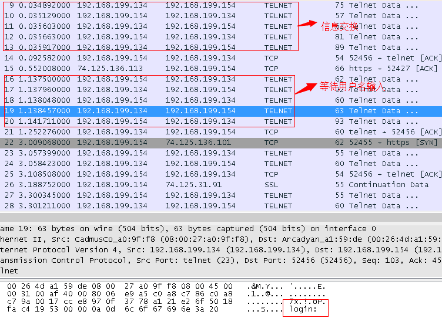
主机输入一个字符就发送一个Telnet报文,然后远程返回一个应答,之后主机发送一个TCP报文.
三个一组:Telnet Telnet TCP
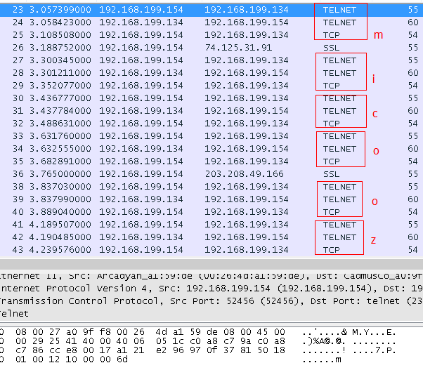
当然最后还有一个回车符\r\n也要产生三个数据包.
回车符发送之后,远端立即回送一个\n\rpassword:要求输入密码.
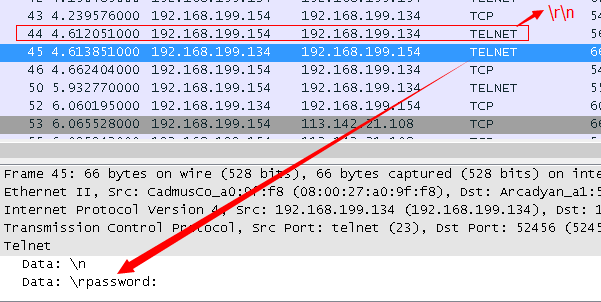
密码输入过程略有不同,一个字符产生两个包,一个是Telnet,一个是TCP.密码明文传输.
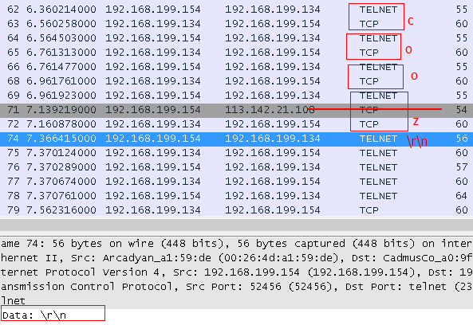
③命令执行和响应
完成密码输入后,服务端验证成功后发送一个Telnet报文询问是否Do Terminal Type开始执行命令行,主机客户端回应Will Terminal Type,将要执行,然后双方发送Suboption End消息,之后服务端放送欢迎消息,如图:
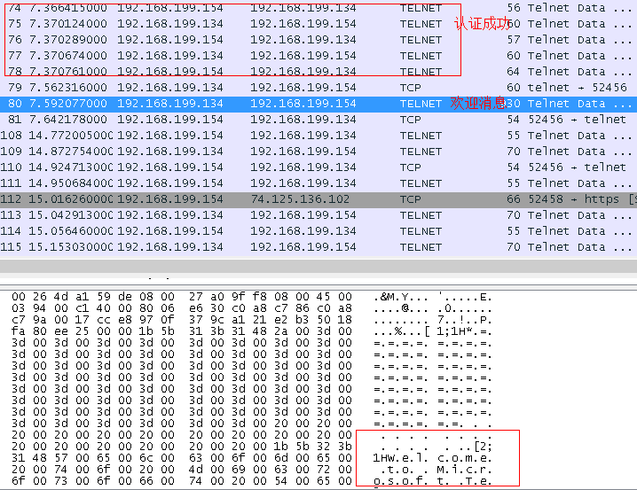
那么之后就可以开始输入命令了,我输入的是net user\r\n

和之前输入用户名的传输方法基本一样.两个Telnet一个TCP同步.
完成输入后回车,服务端执行命令并作出回应:
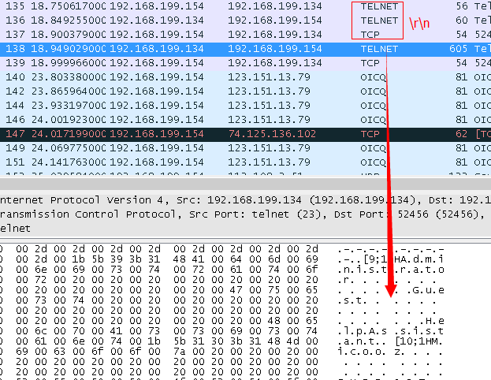
可以看到Administrator Guest HelpAssistant等字样,说明正确返回了执行结果.
关闭CMD窗口时,产生了4个TCP包,第一个TCP包设置标志位FIN告知本次通信结束,服务端回应一个TCP,
表示做好准备关闭连接,随后又发送一个TCP包设置FIN告知客户端要准备断开连接并断开,客户端应答一个表示已断开.通信结束.
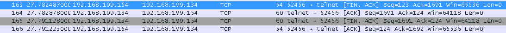
这是典型的关闭TCP连接的过程.
总结
Telnet服务是建立在TCP基础之上的,保证数据的准确性.
建立连接后,每键入一个字符就要发送和应答,产生至少2个数据包,开销很大.
传统的Telnet由于密码明文传输的问题,帐号和密码等敏感资料容易会被窃听,因此很多服务器都会封锁Telnet服务,改
用更安全的SSH.
PS:本文是博主第一次尝试使用Wireshark进行网络协议分析,今后可能还会分析互联网其它一些协议,计算机网络
也是闲来无事自学的,本身非计算机专业,所以文中难免有专业术语或者概念性错误,还请批评指正!谢谢.